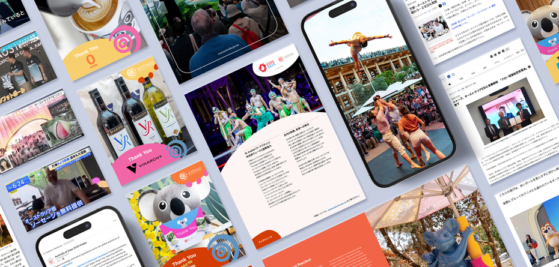

Fresh from the PRCA APAC Awards in Singapore: ICON is proud to celebrate three award wins that reflect the breadth of work we create across audiences, industries and challenges.
Recognition is never the goal, but it’s always meaningful when work that matters is recognised. From World Expo 2025 to Meta’s scam awareness movement and our own AI transformation, these PRCA APAC Award wins reflect impact in many different forms.
Multi-Country Campaign Award (APAC)
Is This Legit? How Meta turned scam awareness into an interactive, social-first movement across APAC.
In partnership with Meta
Scams are one of the most pressing digital issues facing communities across the region. Partnering with Meta, we helped create a campaign that met audiences where they already are: online, social and constantly connected.
Is This Legit? transformed scam awareness into an engaging, participatory movement across APAC, using social-first storytelling and interactive experiences to educate audiences in a way that felt relevant, accessible and shareable.
The campaign was awarded the PRCA APAC Multi-Country Campaign Award, recognising work that successfully connected with audiences across multiple markets while delivering meaningful regional impact.

Chasing the Sun at the World Expo 2025: why Australia’s pavilion was the event of the year
Event/Launch of the Year
In partnership with the Department of Foreign Affairs & Trade and Sunny Side Up (SSU)
Australia’s presence at World Expo 2025 Osaka was designed to do more than attract attention; it was built to create connection. Together with DFAT, we helped bring Australia’s story to life on a global stage through an experience that captured imagination, culture and innovation.
The campaign was recognised with the PRCA Award for Event/Launch of the Year, celebrating work that created a lasting impression for international audiences and elevated Australia’s presence at one of the world’s biggest cultural events.
How ICON transformed with AI: at the nexus between culture and tech
Employee Engagement Award
Transformation is never just about technology; it’s about people. This award recognised ICON’s own internal AI transformation journey and the work undertaken to embed new ways of thinking, working and collaborating across the business.
By focusing equally on culture and capability, the initiative helped position AI not as a disruption, but as an opportunity for teams to evolve together.
Winning the PRCA APAC Employee Engagement Award reflects the importance of creating change that people genuinely want to be part of.